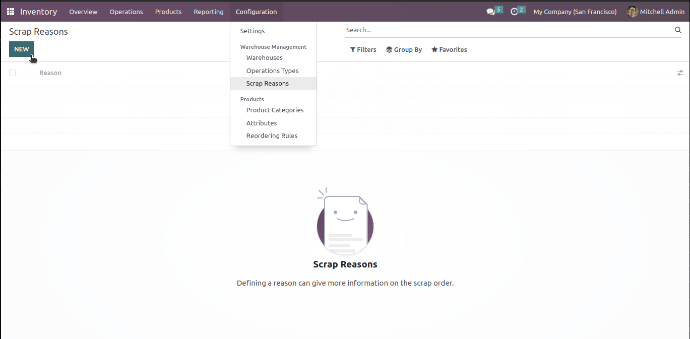
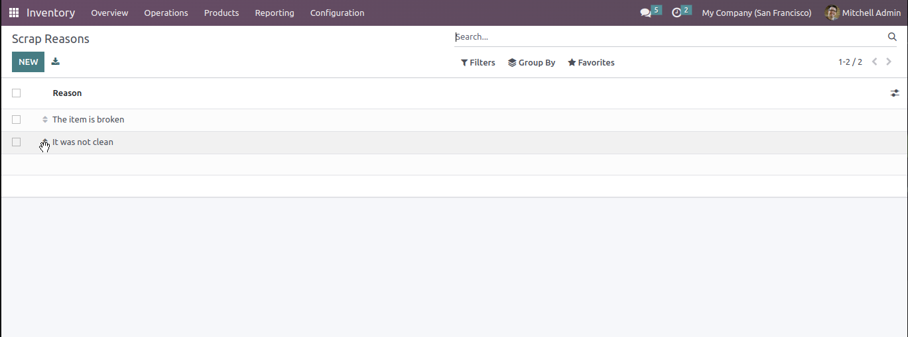
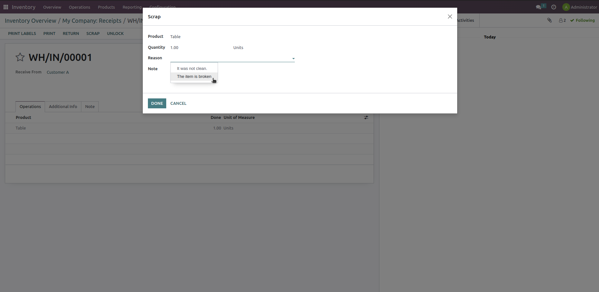
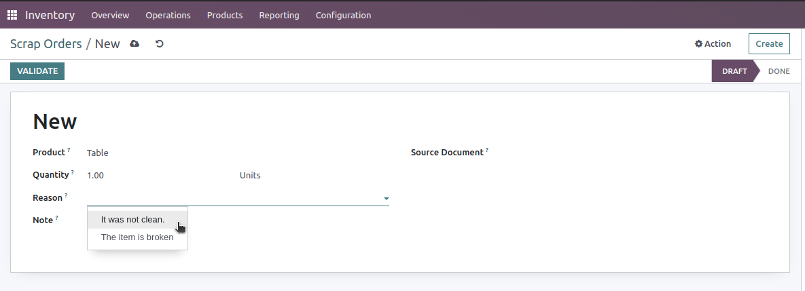
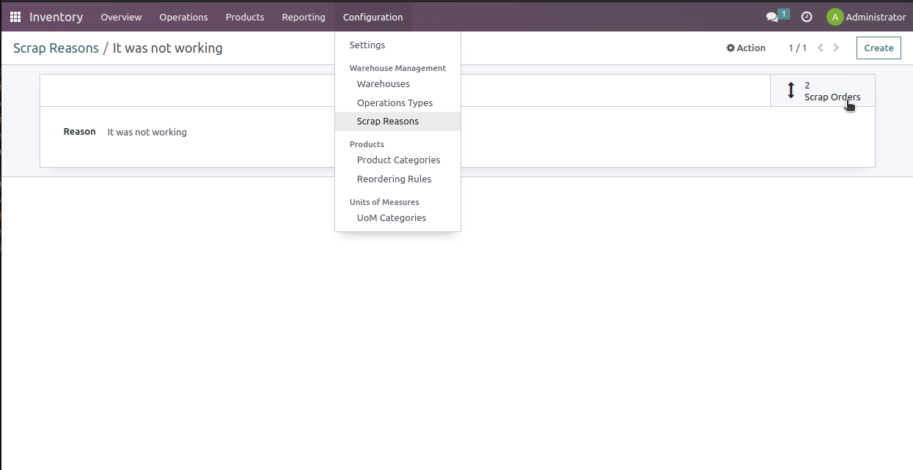

This module is available in two languages: English and German/Deutsch.
Add a Reason on Scrap
This module was written to give the user the possibility to add a reason for the scrap order.
Features
- creating reasons as many as possible
- possibility to prioritize some reasons by ranking them in the list view
- possibility to select a reason from the list reasons
- possibility to add a note on the scrap
- adding the reason and note on both the wizard (through the Scrap button on the move) as well as on the scrap order from the operations.
Go to Inventory / Configuration / Warehouse Management / Scrap Reasons. Easily add a new Scrap Reason.

On the list view, with the help of the handle  , you can order
the reasons:
, you can order
the reasons:

On a validated inventory move to an internal location, where the button Scrap is available, click on the Scrap button. On the Wizard, you are able to select a Reason or add a note:

From Inventory / Operations / Scrap, create or select a scrap order, then select a Reason or add a note:

With the smart button on the Scrap Reason form, you can go to the list of "done" scrap orders with the corresponding reason:

Notes
For any feedback or support need, please:
Simply use our Products Support form www.bitigloo.com/support.
Languages